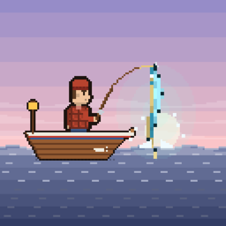

Balıkçı: Dedemin Defteri
Gizlilik Politikası
Son güncelleme: 15 Kasım 2026
Bu politika, Anıl Akar tarafından geliştirilen Balıkçı: Dedemin Defteri iOS oyunu ("Oyun") için geçerlidir.
Kişisel veri toplamıyoruz
Oyun hesap açtırmaz; adınızı, e-posta adresinizi, konumunuzu, rehberinizi, fotoğraflarınızı veya başka bir kişisel bilginizi istemez ve toplamaz. Oyunda reklam, analiz (analytics) veya izleme (tracking) aracı yoktur ve uygulama içi satın alma bulunmaz.
Kayıtlar sadece cihazınızda
Oyun ilerlemeniz ve ayarlarınız yalnızca cihazınızda saklanır, hiçbir sunucuya gönderilmez. Oyunu sildiğinizde bu veriler de silinir.
Game Center
Game Center'a giriş yaptıysanız başarımlarınız Apple'ın Game Center hizmetine iletilir. Bu veriler Apple tarafından Apple Gizlilik Politikası'na göre işlenir; geliştirici olarak bu verilere erişmiyor ve saklamıyoruz. Game Center'ı iPhone Ayarlar'ından kapatabilirsiniz.
Bildirimler
İzin verirseniz oyun, mezat saatleri gibi hatırlatmalar için yerel bildirimler gösterir. Bu bildirimler cihazınızda oluşturulur; hiçbir veri dışarı gönderilmez. İzni istediğiniz zaman Ayarlar'dan kapatabilirsiniz.
Çocuklar
Oyun hiçbir kullanıcıdan, çocuklar dahil, kişisel veri toplamaz.
Değişiklikler
Oyuna veri işleyen yeni bir özellik eklenirse (ör. reklam veya satın alma) bu sayfa önceden güncellenir.
İletişim
Sorularınız için: anilakar.destek@gmail.com
Destek
Bir hata mı buldunuz, bir sorunuz ya da öneriniz mi var? Bize yazın: anilakar.destek@gmail.com. Genellikle birkaç gün içinde yanıt veririz.
Sık sorulanlar
İlerlemem kayboldu mu? Oyun otomatik kaydeder ve 3 ayrı kayıt yuvası vardır. Kayıtlar cihazda tutulur; oyunu silerseniz kayıtlar da silinir.
Dili nasıl değiştiririm? Ana sayfa → Ayarlar → Dil: Türkçe / English.
Bildirimleri nasıl kapatırım? Oyun içi Ayarlar'dan ya da iPhone Ayarlar → Balıkçı → Bildirimler'den.
Privacy Policy
Last updated: November 15, 2026
This policy applies to Fisher: Grandpa's Notebook (Balıkçı: Dedemin Defteri), an iOS game developed by Anıl Akar (the "Game").
We do not collect personal data
The Game does not require an account and does not ask for or collect your name, email address, location, contacts, photos or any other personal information. The Game contains no advertising, analytics or tracking tools and no in-app purchases.
Your progress stays on your device
Game progress and settings are stored only on your device and are never sent to any server. Deleting the Game deletes this data.
Game Center
If you are signed in to Game Center, your achievements are sent to Apple's Game Center service and handled by Apple under the Apple Privacy Policy. We, the developer, do not access or store this data. You can turn off Game Center in iPhone Settings.
Notifications
If you allow it, the Game shows local notifications, such as auction-time reminders. They are created on your device and no data leaves it. You can turn them off at any time in Settings.
Children
The Game does not collect personal data from anyone, including children.
Changes
If a feature that processes data (such as ads or purchases) is added, this page will be updated beforehand.
Contact
Questions: anilakar.destek@gmail.com
Support
Found a bug, have a question or a suggestion? Email us at anilakar.destek@gmail.com. We usually reply within a few days.
Did I lose my progress? The Game saves automatically in 3 save slots stored on your device; deleting the Game deletes them.
How do I change the language? Main page → Settings → Language: Türkçe / English.